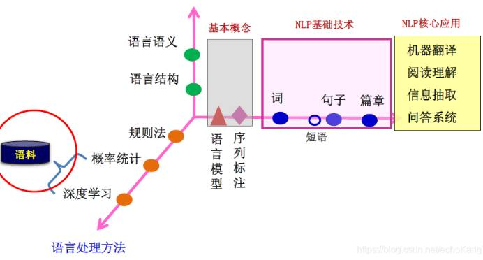
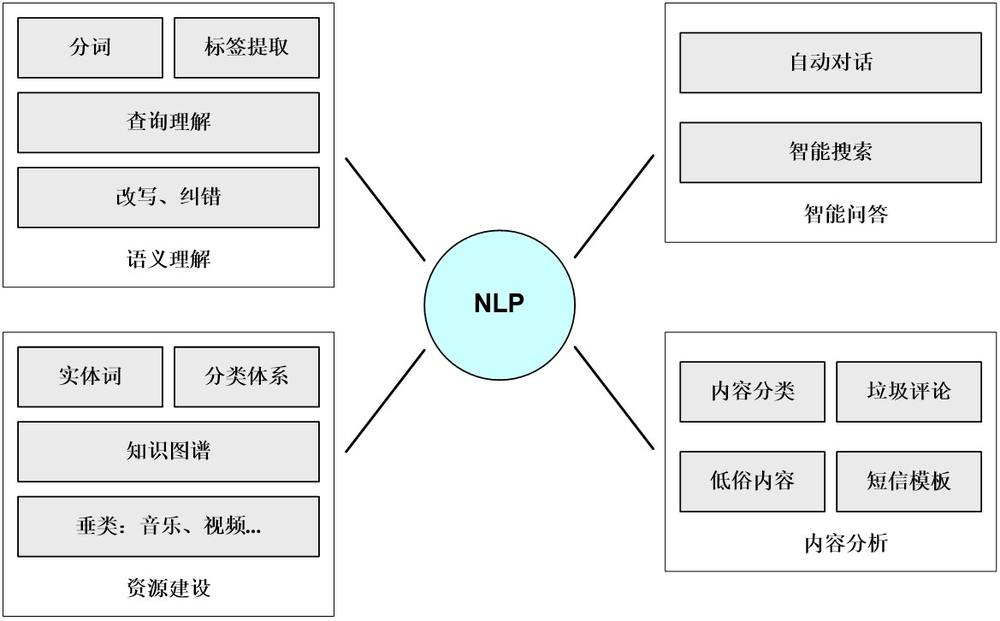
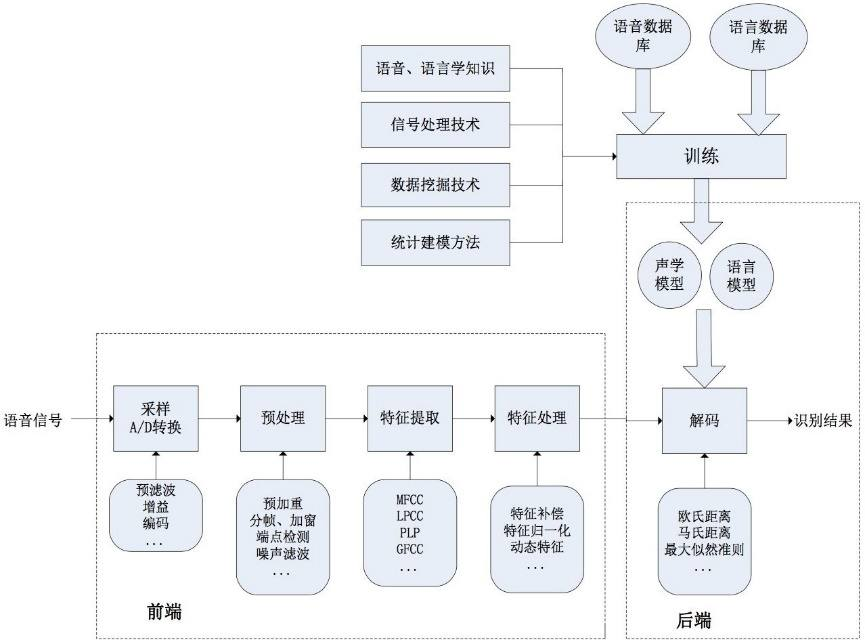
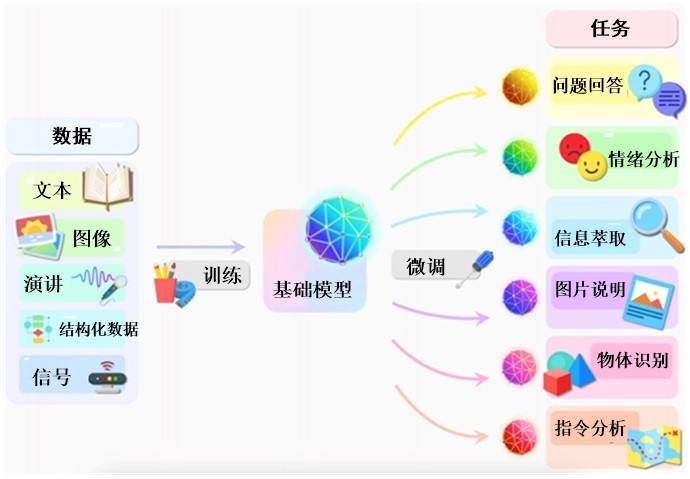
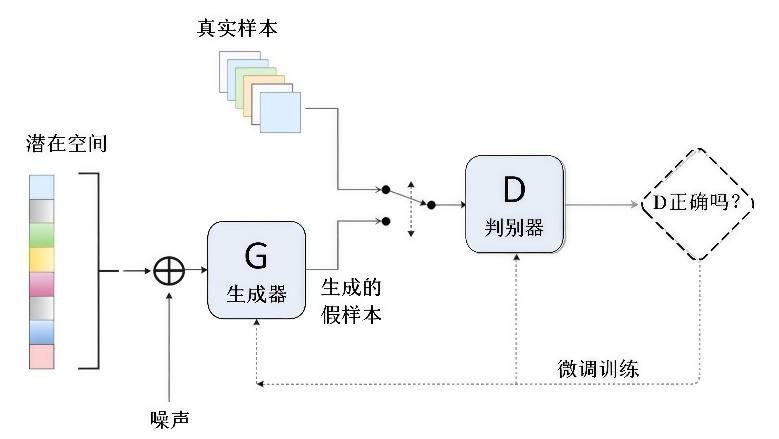
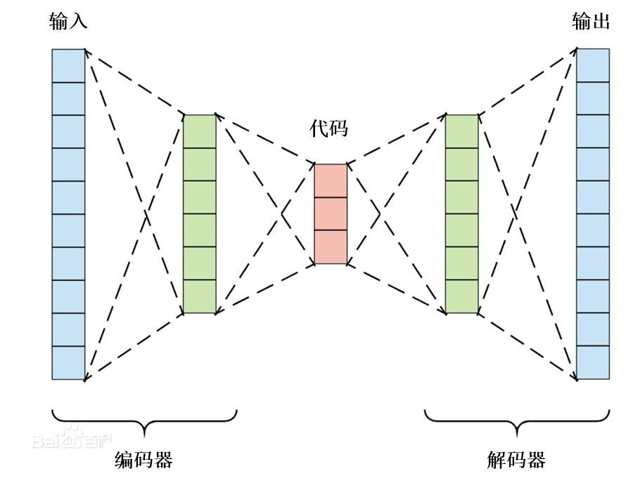

第 1 页 · 数智人才培养

数智人才培养
AI通识精品系列
周苏 教授 QQ：81505050
人工智能通识教程
第 2 页 · 第8章
第8章
周苏 教授 QQ：81505050
自然语言处理与大语言模型


第 3 页 · 自然语言处理（NLP）是计算机科学与人工智能领域的一个重要方向，它融语言学、计算机科学、数学于一体，研究实现人与计算机之
自然语言处理（NLP）是计算机科学与人工智能领域的一个重要方向，它融语言学、计算机科学、数学于一体，研究实现人与计算机之间用自然语言进行有效通信的各种理论和方法，
特别是其中的软件系统。
第8章 自然语言处理与大语言模型

第 4 页 · 源自自然语言处理，大语言模型（LLM）是一种基于深度学习的人工智能系统，它通过在大量文本数据上进行训练，能够理解和生成自
源自自然语言处理，大语言模型（LLM）是一种基于深度学习的人工智能系统，它通过在大量文本数据上进行训练，能够理解和生成自然语言。这些模型拥有数亿至数千亿个参数，使其具备强大的语言处理能力，可以执行如文本生成、翻译、问答等多种任务，广泛应用于科研、教育、商业等领域，极大地推动了自然语言处理技术的发展。
第8章 自然语言处理与大语言模型
第 5 页 · 01

01
语言的问题
和可能性
02
从自然语言
处理起步
03
大语言模型
崛起
04
高性能、
低算力成本
的DeepSeek
目录 / CONTENTS
05
大语言模型
工作原理
06
大语言模型
的生成模型
第 6 页 · PART 01
PART 01
语言的问题和可能性
第 7 页 · 人类大约在10万年前学会说话，大约在5千年前学会写字。人类语言的复杂性和多样性使得智人区别于其他所有物种。当然，人类还有
人类大约在10万年前学会说话，大约在5千年前学会写字。人类语言的复杂性和多样性使得智人区别于其他所有物种。当然，人类还有一些其他的特有属性：没有任何其他物种像人类那样穿衣服，进行艺术创作，或者每天花两小时在社交媒体上交流。图灵提出的智能测试是基于语言的，这也许是因为语言具有普适性：一个演讲者演讲（或作家写作）的目标是交流知识，他组织语言来表示这些知识，然后采取行动以实现这一目标。听众（或读者）感知他们的语言并推断其中的含义。
8.1 语言的问题和可能性
第 8 页 · 这种通过语言的交流促进了文明的发展，是我们传播文化、法律、科学和技术知识的主要方式。人类的智能与语言密切相关。人类的逻辑
这种通过语言的交流促进了文明的发展，是我们传播文化、法律、科学和技术知识的主要方式。人类的智能与语言密切相关。人类的逻辑思维以语言为形式，人类的绝大部分知识也是以语言文字的形式记载和流传下来的。
8.1 语言的问题和可能性
第 9 页 · 口语是人类之间最常见、最古老的语言交流形式，使我们能够进行同步对话——可以与一个或多个人进行交互式交流，让我们变得更具表
口语是人类之间最常见、最古老的语言交流形式，使我们能够进行同步对话——可以与一个或多个人进行交互式交流，让我们变得更具表现力，最重要的是，也可以让我们彼此倾听。虽然语言有其精确性，却很少有人会非常精确地使用语言。由于存在着许多含糊之处，可以想象语言理解可能会给机器带来的问题。对计算机而言，理解语音无比困难，但理解文本就简单得多。但是文本语言缺乏口语所能提供的自发性、流动性和交互性。
8.1 语言的问题和可能性
第 10 页 · PART 02
PART 02
从自然语言处理起步
第 11 页 · 使用自然语言与计算机进行通信，这是人们长期以来所追求的。因为由此人们可以用自己最习惯的语言来使用计算机，而无需再花大量的
使用自然语言与计算机进行通信，这是人们长期以来所追求的。因为由此人们可以用自己最习惯的语言来使用计算机，而无需再花大量的时间和精力去学习不很自然和不习惯的各种计算机语言；人们也可以通过它进一步了解人类的语言能力和智能的机制。
自然语言处理研究如何让计算机理解、生成和分析人类自然语言的学科，它的发展经历了从基于规则的方法到统计方法，再到深度学习方法的转变。大语言模型的兴起标志着自然语言处理领域的一个重要里程碑，它们代表了深度学习方法在处理自然语言上的最新进展。
8.2 从自然语言处理起步
第 12 页 · 从现有的理论和技术现状看，通用的、高质量的NLP系统仍然是较长期的努力目标，但是针对一定应用，具有相当自然语言处理能力的
从现有的理论和技术现状看，通用的、高质量的NLP系统仍然是较长期的努力目标，但是针对一定应用，具有相当自然语言处理能力的实用系统已经出现，有些已商品化甚至产业化。典型
的例子有：多语种数据库、各种机器
翻译系统、自动文摘系统等。
8.2 从自然语言处理起步

第 13 页 · 自然语言处理研究的主要内容大致可以分为以下几个方面。
自然语言处理研究的主要内容大致可以分为以下几个方面。
（1）文本预处理：这是自然语言处理的基础步骤，包括文本清洗（去除无关字符、标点符号等）、分词（将文本切分成单词或词汇单元）、词性标注（为每个词汇分配语法类别，如名词、动词等）、命名实体识别（识别文本中的特定实体，如人名、地点、组织机构名等）。
（2）词法分析：如何分析词汇的形式和意义，包括词干提取（将词汇还原为其词根形式）、词形还原（将词汇还原为标准词典形式）等。
8.2.1 自然语言处理研究内容
第 14 页 · （3）句法分析：分析句子的结构和组成成分，包括句法树结构的构建、依存关系分析（确定词汇间的语法关系）等。
（3）句法分析：分析句子的结构和组成成分，包括句法树结构的构建、依存关系分析（确定词汇间的语法关系）等。
（4）语义分析：理解文本的深层含义，包括情感分析（判断文本的情感倾向）、主题抽取（识别文本的主题内容）、篇章理解（理解长篇文本的连贯性和逻辑关系）等。
（5）自然语言生成：将非自然语言形式的信息转换成自然语言文本，如自动生成报告、新闻摘要、对话应答等。
8.2.1 自然语言处理研究内容
第 15 页 · （6）机器翻译：将一种自然语言自动转换为另一种自然语言，这是NLP的重要应用之一。
（6）机器翻译：将一种自然语言自动转换为另一种自然语言，这是NLP的重要应用之一。
（7）对话系统：构建能够与人类进行自然对话的系统，包括聊天机器人、语音助手等，涉及对话管理、上下文理解、自然语言生成等技术。
（8）信息检索与过滤：从大量文本中找出匹配查询条件的信息，如搜索引擎、推荐系统等。
8.2.1 自然语言处理研究内容
第 16 页 · （9）语音识别与语音合成：将语音信号转换为文本（语音识别），或将文本转换为语音信号（语音合成）。
（9）语音识别与语音合成：将语音信号转换为文本（语音识别），或将文本转换为语音信号（语音合成）。
（10）知识图谱与语义网：构建和利用知识图谱来增强机器对世界的理解和推理能力，用于问答系统、智能推荐等场景。
（11）深度学习模型：使用深度神经网络（如RNN、LSTM、Transformer等）来处理自然语言任务，包括语言模型、词向量表示（如Word2Vec、GloVe）、注意力机制等。
8.2.1 自然语言处理研究内容
第 17 页 · 早期的NLP系统依赖于手工编写的规则来解析和理解语言。这些规则基于语言学理论，试图直接编码语法和语义规则，但这种方法难以
早期的NLP系统依赖于手工编写的规则来解析和理解语言。这些规则基于语言学理论，试图直接编码语法和语义规则，但这种方法难以扩展到大规模文本和处理语言的灵活性。随着数据量的增长和计算能力的提升，统计方法开始主导NLP领域。这些方法利用概率模型来处理语言，比如n元模型，能够更好地处理语言的变异性，但仍然有局限性，尤其是在处理长距离依赖和复杂语言结构时。
8.2.2 深度学习的影响
第 18 页 · 深度学习对自然语言处理领域产生了深远的影响，彻底改变了人们处理、理解和生成人类语言的方式，几个关键点如下。
深度学习对自然语言处理领域产生了深远的影响，彻底改变了人们处理、理解和生成人类语言的方式，几个关键点如下。
（1）提升理解能力：深度学习模型，尤其是基于Transformer架构的模型如BERT、GPT系列等，能够学习到语言的深层结构和语境依赖性，极大地提升了计算机理解复杂语言任务的能力，比如问答系统、文本蕴含判断和语义理解。
8.2.2 深度学习的影响
第 19 页 · （2）文本生成与创意写作：通过使用序列到序列模型（seq2seq）结合注意力机制，深度学习模型能够生成连贯、有逻辑的文本
（2）文本生成与创意写作：通过使用序列到序列模型（seq2seq）结合注意力机制，深度学习模型能够生成连贯、有逻辑的文本，应用于文章创作、新闻摘要生成、对话系统响应生成等，甚至可以模仿特定风格或作者的写作风格。
（3）词嵌入与表征学习：词嵌入技术（如Word2Vec、GloVe）以及更先进的上下文敏感的词嵌入（如BERT中的词块嵌入）为词语提供了高维向量表示，这些表示能够捕捉词汇之间的语义和语法关系，使得模型能够更好地理解和处理文本，为深度学习应用于NLP奠定了基础。
8.2.2 深度学习的影响
第 20 页 · （4）情感分析与语义理解：深度学习模型能够更准确地识别文本中的情绪、态度和观点，这对于社交媒体分析、客户服务、产品反馈分
（4）情感分析与语义理解：深度学习模型能够更准确地识别文本中的情绪、态度和观点，这对于社交媒体分析、客户服务、产品反馈分析等领域至关重要，帮助企业和机构更好地理解用户需求和市场趋势。
（5）机器翻译：基于神经网络的机器翻译系统，如Transformer模型，相比传统的统计机器翻译方法，能够提供更流畅、更准确的翻译结果，大大推进了跨语言沟通的便利性。
8.2.2 深度学习的影响
第 21 页 · （6）对话系统与聊天机器人：深度学习技术使得聊天机器人更加智能化，能够进行多轮对话、理解用户意图并作出反应，改善了用户体
（6）对话系统与聊天机器人：深度学习技术使得聊天机器人更加智能化，能够进行多轮对话、理解用户意图并作出反应，改善了用户体验，广泛应用于客户服务、教育、娱乐等多个行业。
（7）命名实体识别与信息抽取：深度学习模型在识别文本中的命名实体（如人名、地点、组织机构等）和抽取关键信息方面展现出了强大性能，对于构建知识图谱、信息检索和智能文档处理等应用极为重要。
8.2.2 深度学习的影响
第 22 页 · （8）解决数据稀疏性问题：尽管NLP任务常面临数据稀疏性（指数据框中绝大多数数值缺失或者为零的数据）挑战，深度学习模型通
（8）解决数据稀疏性问题：尽管NLP任务常面临数据稀疏性（指数据框中绝大多数数值缺失或者为零的数据）挑战，深度学习模型通过学习更高级别的抽象特征，能在一定程度上缓解这一问题，尤其是在少数族裔语言、专业领域术语等方面。
（9）模型可扩展性与迁移学习：预训练的大语言模型，如T5、BERT等，通过迁移学习策略，能够在少量样本上快速适应新的任务，降低了特定领域应用的门槛，加速自然语言处理技术的普及和应用。
8.2.2 深度学习的影响
第 23 页 · （10）持续推动技术创新：深度学习的引入激发了一系列研究和开发活动，不断推动NLP技术边界，包括模型结构创新、训练策略优
（10）持续推动技术创新：深度学习的引入激发了一系列研究和开发活动，不断推动NLP技术边界，包括模型结构创新、训练策略优化、计算效率提升等，为未来的自然语言处理技术发展奠定了坚实基础。
8.2.2 深度学习的影响
第 24 页 · 语音处理是研究语音发声过程、语音信号的统计特性、语音的自动识别、机器合成以及语音感知等各种处理技术的总称。由于现代的语音
语音处理是研究语音发声过程、语音信号的统计特性、语音的自动识别、机器合成以及语音感知等各种处理技术的总称。由于现代的语音处理技术都以数字计算为基础，并借助微处理器、信号处理器或通用计算机加以实现，因此也称数字语音信号处理。语音信号处理以生理、心理、语言以及声学等基本实验为基础，以信息论、控制论、系统论的理论作指导，通过应用信号处理、统计分析、模式识别等现代技术手段，发展成为新的学科。
8.2.3 语音理解与语音识别
第 25 页 · （1）语音理解。是指利用知识表达和组织等人工智能技术进行语句自动识别和语意理解。同语音识别的主要不同点是对语法和语义知识
（1）语音理解。是指利用知识表达和组织等人工智能技术进行语句自动识别和语意理解。同语音识别的主要不同点是对语法和语义知识的充分利用程度。
由于人对语音有广泛的知识，可以对要说的话有一定的预见性，所以人对语音具有感知和分析能力。依靠人对语言和谈论的内容所具有的广泛知识，利用知识提高计算机理解语言的能力，就是语音理解研究的核心。
8.2.3 语音理解与语音识别
第 26 页 · 利用理解能力，可以使系统提高性能：①能排除噪声和嘈杂声；②能理解上下文的意思并能用它来纠正错误，澄清不确定的语义；③能够
利用理解能力，可以使系统提高性能：①能排除噪声和嘈杂声；②能理解上下文的意思并能用它来纠正错误，澄清不确定的语义；③能够处理不合语法或不完整的语句。因此，研究语音理解的目的，可以说是与其研究系统仔细地去识别每一个单词，倒不如去研究系统能抓住说话的要旨更为有效。
8.2.3 语音理解与语音识别
第 27 页 · 一个语音理解系统除了包括原语音识别所要求的部分之外，还须添入知识处理部分。知识处理包括知识的自动收集、知识库的形成，知识
一个语音理解系统除了包括原语音识别所要求的部分之外，还须添入知识处理部分。知识处理包括知识的自动收集、知识库的形成，知识的推理与检验等。当然还希望能有自动地作知识修正的能力。因此语音理解可以认为是信号处理与知识处理结合的产物。语音知识包括音位知识、音变知识、韵律知识、词法知识、句法知识，语义知识以及语用知识。这些知识涉及实验语音学、汉语语法、自然语言理解、以及知识搜索等许多交叉学科。
8.2.3 语音理解与语音识别
第 28 页 · （2）语音识别。是指利用计算机自动对语音信号的音素、音节或词进行识别的技术总称。语音识别是实现语音自动控制的基础。
（2）语音识别。是指利用计算机自动对语音信号的音素、音节或词进行识别的技术总称。语音识别是实现语音自动控制的基础。
8.2.3 语音理解与语音识别
第 29 页 · 语音识别一般要经过以下几
语音识别一般要经过以下几
个步骤：
图8-3 语音识别系统框架
8.2.3 语音理解与语音识别

第 30 页 · （1）语音预处理，包括对语音幅度标称化、频响校正、分帧、加窗和始末端点检测等内容。
（1）语音预处理，包括对语音幅度标称化、频响校正、分帧、加窗和始末端点检测等内容。
（2）语音声学参数分析，包括对语音共振峰频率、幅度等参数，以及对语音的线性预测参数、倒谱参数等的分析。
（3）参数标称化，主要是时间轴上的标称化，常用的方法有动态时间规整（DTW），或动态规划方法（DP）。
（4）模式匹配，可以采用距离准则或概率规则，也可以采用句法分类等。
（5）识别判决，通过最后的判别函数给出识别的结果。
8.2.3 语音理解与语音识别
第 31 页 · 语音识别可按不同的识别内容进行分类，其中最困难的是大词量、连续音和不识人同时满足的语音识别。
语音识别可按不同的识别内容进行分类，其中最困难的是大词量、连续音和不识人同时满足的语音识别。
8.2.3 语音理解与语音识别
第 32 页 · PART 03
PART 03
大语言模型崛起
第 33 页 · 大语言模型是近年来人工智能领域的一项重要进展，是一种基于机器学习、深度学习和自然语言处理技术的先进人工智能模型。这类模型
大语言模型是近年来人工智能领域的一项重要进展，是一种基于机器学习、深度学习和自然语言处理技术的先进人工智能模型。这类模型具有大规模参数和复杂结构，其参数数量可达到数十亿乃至数万亿之多。经过大规模的文本数据训练，通过深度学习架构，其中尤其是Transformer模型，大语言模型能够学习到自然语言的复杂特征、模式和结构。其设计目的是广泛理解和生成类似于人类的自然语言，从而在多种自然语言处理任务中展现卓越性能，而无需针对每个任务单独编程。
8.3 大语言模型崛起
第 34 页 · 如今，大语言模型已被应用于各种场景，极大地推动了人工智能的实用化进程，也对模型的效率、经济成本、伦理和隐私等方面提出了新
如今，大语言模型已被应用于各种场景，极大地推动了人工智能的实用化进程，也对模型的效率、经济成本、伦理和隐私等方面提出了新的挑战。
8.3 大语言模型崛起
第 35 页 · 语言模型起源于语音识别。输入一段音频数据，语音识别系统通常会生成多个句子作为候选，而判断哪个句子更合理，就需要用语言模型
语言模型起源于语音识别。输入一段音频数据，语音识别系统通常会生成多个句子作为候选，而判断哪个句子更合理，就需要用语言模型对候选句子进行排序。语言模型是自然语言处理领域的基础任务和核心问题，其目标是对自然语言的概率分布建模。而生成式人工智能的一个关键特性是，不仅可以理解和分析数据，还能够创造新的内容或预测未来的数据，这些输出是从学习的数据模式中派生出来的。
8.3.1 语言模型基础
第 36 页 · 语言模型是“对于任意的词序列，它能够计算出这个序列是一句话的概率。”例如，词序列A：“这个网站|的|文章|真|水|啊”，
语言模型是“对于任意的词序列，它能够计算出这个序列是一句话的概率。”例如，词序列A：“这个网站|的|文章|真|水|啊”，这个明显是一句话，一个好的语言模型也会给出很高的概率。再看词序列B：“这个网站|的|睡觉|苹果|好快”，这明显不是一句话，如果语言模型训练的好，那么序列B的概率就会很小。
8.3.1 语言模型基础
第 37 页 · 定义：假设我们要为中文创建一个语言模型，V表示词典，V = {猫, 狗, 机器, 学习, 语言, 模型, ...}，wi
定义：假设我们要为中文创建一个语言模型，V表示词典，V = {猫, 狗, 机器, 学习, 语言, 模型, ...}，wi ∈V。语言模型就是这样一个模型：给定词典V，能够计算出任意单词序列 w1, w2, ..., wn是一句话的概率p(w1, w2, ..., wn) ，其中，p≥0 。
计算p(w1, w2, ..., wn) 的最简单方法是数数，假设训练集中共有N个句子，数一下训练集中 (w1, w2, ..., wn) 出现的次数，假定为n，则 p(w1, w2, ..., wn) = n/N。可以想象，一旦单词序列没有在训练集中出现过，模型的输出概率就是0。
8.3.1 语言模型基础
第 38 页 · 语言模型的另一种等价定义是：能够计算 p(wi | w1, w2, ..., wi-1) 的模型就是语言模型。
语言模型的另一种等价定义是：能够计算 p(wi | w1, w2, ..., wi-1) 的模型就是语言模型。
从文本生成角度来看，也可以给出如下的定义：给定一个短语（一个词组或一句话），语言模型可以生成（预测）接下来的一个词。
8.3.1 语言模型基础
第 39 页 · 语言模型可用于提升语音识别和机器翻译的性能。例如，在语音识别中，给定一段“厨房里食油用完了”的语音，有可能会输出“厨房里
语言模型可用于提升语音识别和机器翻译的性能。例如，在语音识别中，给定一段“厨房里食油用完了”的语音，有可能会输出“厨房里食油用完了”和“厨房里石油用完了”这两个读音完全一样的文本序列。如果语言模型判断出前者的概率大于后者的概率，就可以根据相同读音的语音输出“厨房里食油用完了”这个文本序列。在机器翻译中，如果对英文“you go first”逐词翻译成中文的话，可能得到“你走先”“你先走”等排列方式的文本序列。如果语言模型判断出“你先走”的概率大于其他排列方式文本序列的概率，就可以把“you go first”译成“你先走”。
8.3.1 语言模型基础
第 40 页 · 大语言模型能够完成从简单的问答、文本翻译到复杂的对话、文本创作等多种任务。例如，OpenAI的GPT系列、阿里云的通义千
大语言模型能够完成从简单的问答、文本翻译到复杂的对话、文本创作等多种任务。例如，OpenAI的GPT系列、阿里云的通义千问以及DeepSeek（深度求索）等，都是此类模型的代表。它们的核心优势在于能够捕捉语言的细微差别、对语言的泛化理解、上下文敏感的生成以及一定程度的创造性表达。这使得它们在处理自然语言时更为灵活和准确，此外还能在一定程度上展现逻辑思维、推理能力和创造性。
8.3.2 大语言模型特征
第 41 页 · 在大语言模型的上下文中，“大”主要有两层含义。一方面，它是指模型的参数数量通常会非常大，使得模型能够学习和表示语言中细微
在大语言模型的上下文中，“大”主要有两层含义。一方面，它是指模型的参数数量通常会非常大，使得模型能够学习和表示语言中细微且非常复杂的模式。另一方面，“大”也指训练数据的规模，它通常在来自互联网、书籍、新闻等各种来源的大规模文本数据上进行训练。
8.3.2 大语言模型特征
第 42 页 · 大语言模型的核心特征还包括：
大语言模型的核心特征还包括：
（1）深度学习架构：它们通常基于先进的神经网络架构，尤其是Transformer模型，该架构擅长处理序列数据，通过自注意力机制理解长距离的依赖关系。
（2）无监督预训练：首先在大量未标注文本上进行无监督学习，预训练让模型学习语言的统计规律和潜在结构，之后可以根据具体任务进行有监督的微调。
8.3.2 大语言模型特征
第 43 页 · （3）生成与理解并重：既能根据上下文生成连贯、有逻辑的新文本，也能理解输入文本的意义，进行精准的语义解析和信息提取。
（3）生成与理解并重：既能根据上下文生成连贯、有逻辑的新文本，也能理解输入文本的意义，进行精准的语义解析和信息提取。
（4）持续学习与适应性：具有持续学习能力，可以通过接收新数据不断优化和扩展知识，保持模型的时效性和准确性。
8.3.2 大语言模型特征
第 44 页 · PART 04
PART 04
高性能、低算力成本的DeepSeek
第 45 页 · DeepSeek（中国杭州深度求索人工智能基础技术研究有限公司），是一家创新型科技公司，成立于2023年7月17日，由知
DeepSeek（中国杭州深度求索人工智能基础技术研究有限公司），是一家创新型科技公司，成立于2023年7月17日，由知名私募巨头幻方量化孕育而生。
8.4 高性能、低算力成本的DeepSeek
第 46 页 · 2024年1月5日，公司发布DeepSeek LLM（其第一个大模型），1月25日，发布DeepSeek-Coder，2
2024年1月5日，公司发布DeepSeek LLM（其第一个大模型），1月25日，发布DeepSeek-Coder，2月5日发布DeepSeekMath，3月11日发布DeepSeek-VL，5月7日发布DeepSeek-V2，6月17日发布DeepSeek-Coder-V2，9月5日更新API支持文档，宣布合并DeepSeek Coder V2和DeepSeek V2 Chat，推出DeepSeek V2.5，12月13日，发布DeepSeek-VL2，12月26日晚正式上线DeepSeek-V3首个版本并同步开源。2025年1月27日，DeepSeek应用登顶苹果美国地区应用商店免费APP下载排行榜。
8.4 高性能、低算力成本的DeepSeek
第 47 页 · 2025年1月末，英伟达、亚马逊和微软都宣布接入DeepSeek-R1模型。英伟达将DeepSeek-R1称为最先进的大
2025年1月末，英伟达、亚马逊和微软都宣布接入DeepSeek-R1模型。英伟达将DeepSeek-R1称为最先进的大语言模型。截至2025年2月5日，DeepSeek-R1、V3、Coder等系列模型已陆续上线国家超算互联网平台。而另一方面，2025年2月6日，澳大利亚政府以所谓“担心安全风险”为由，禁止在所有政府设备中使用DeepSeek。
8.4 高性能、低算力成本的DeepSeek
第 48 页 · 一时间，DeepSeek风靡全球，人们言必谈DeepSeek，人工智能又一次成为全球话题，这一次，话题的中心是中国AI。
一时间，DeepSeek风靡全球，人们言必谈DeepSeek，人工智能又一次成为全球话题，这一次，话题的中心是中国AI。实际上，DeepSeek专注于开发先进的大语言模型和相关技术，它使用数据蒸馏技术得到更为精炼、有用的数据，在此基础上实现了大模型的高性能、低成本。
8.4 高性能、低算力成本的DeepSeek
第 49 页 · 所谓数据蒸馏技术，是一种在机器学习和深度学习领域中用于减少数据集大小同时保留关键信息的技术。其主要目的是通过生成一个更小
所谓数据蒸馏技术，是一种在机器学习和深度学习领域中用于减少数据集大小同时保留关键信息的技术。其主要目的是通过生成一个更小但信息量丰富的数据集来加速训练过程，降低计算成本，并可能提高模型的泛化能力。数据蒸馏技术尤其适用于大规模数据集，其中原始数据集可能包含大量冗余信息或噪声。
8.4.1 数据蒸馏技术
第 50 页 · （1）核心思想。数据蒸馏的核心思想是通过对原始数据集进行某种形式的压缩或提炼，创建一个“精炼”的数据子集。这个子集应该尽
（1）核心思想。数据蒸馏的核心思想是通过对原始数据集进行某种形式的压缩或提炼，创建一个“精炼”的数据子集。这个子集应该尽可能地保留对训练模型至关重要的特征和模式，以便于在保持模型性能的同时显著减少所需的训练数据量。
8.4.1 数据蒸馏技术
第 51 页 · （2）主要方法。
（2）主要方法。
• 基于模型的方法：使用已经训练好的模型来评估每个样本的重要性，然后选择那些对模型贡献最大的样本作为精炼后的数据集。
· 合成数据生成：通过生成对抗网络（GANs）、变分自编码器（VAEs）等生成模型直接从原始数据集中学习分布，并生成新的、具有代表性的样本。
8.4.1 数据蒸馏技术
第 52 页 · • 数据增强与混合：应用数据增强技术（如旋转、缩放、裁剪等）以及样本间的混合（Mixup），以创造更多样化的训练实例，从
• 数据增强与混合：应用数据增强技术（如旋转、缩放、裁剪等）以及样本间的混合（Mixup），以创造更多样化的训练实例，从而有效地扩展训练集的有效性。
• 主动学习：在主动学习框架下，模型会选择最不确定或最有价值的样本进行标注和加入训练集，这种方法可以看作是一种特殊形式的数据蒸馏。
• 元学习：利用元学习算法找到一组参数或策略，使得少量精挑细选的数据能够快速适应新任务的学习过程。
8.4.1 数据蒸馏技术
第 53 页 · （3）应用场景。
（3）应用场景。
• 资源受限环境：在计算资源有限的情况下，使用数据蒸馏可以帮助快速训练高效的小型模型。
• 隐私保护：通过蒸馏处理，可以减少直接访问原始敏感数据的需求，有助于增强用户数据的隐私保护。
• 提升效率：对于需要频繁更新模型的应用场景，比如在线学习系统，数据蒸馏能显著缩短每次迭代的时间。
8.4.1 数据蒸馏技术
第 54 页 · 尽管数据蒸馏提供了许多潜在的好处，但它也面临着一些挑战，包括如何准确地识别和提取最重要的数据特征，避免过拟合到特定的任务
尽管数据蒸馏提供了许多潜在的好处，但它也面临着一些挑战，包括如何准确地识别和提取最重要的数据特征，避免过拟合到特定的任务或数据集，以及确保蒸馏后的数据集不会丢失重要信息而导致模型性能下降。
数据蒸馏是一项前沿的研究课题，它为优化机器学习流程提供了新的视角，特别是在处理大数据集时展现出了巨大的潜力。随着研究的深入和技术的发展，我们可以期待看到更多创新的数据蒸馏方法出现。
8.4.1 数据蒸馏技术
第 55 页 · 尽管当前人工智能实现了技术进步、成本降低，但仍然需要持续投入人工智能基础设施，以确保处于技术创新的最前沿。公开资料显示，
尽管当前人工智能实现了技术进步、成本降低，但仍然需要持续投入人工智能基础设施，以确保处于技术创新的最前沿。公开资料显示，2024年，微软、Meta、谷歌和亚马逊等美国四大科技公司在人工智能和数据中心的投资总额达到1250亿美元，预计全年投入将超2180亿美元。然而，这些开支背后的回报，却并未能在短时间内显现。
8.4.2 让大模型的投入与收益成正比
第 56 页 · 为了让“大模型”数以千亿美元计的投入的收益成正比，大语言模型发展需要关注应用层的价值创造。尤其在ToC（面向消费者）领域
为了让“大模型”数以千亿美元计的投入的收益成正比，大语言模型发展需要关注应用层的价值创造。尤其在ToC（面向消费者）领域，市场上还没有看到所谓的超级应用。专家认为，整个世界目前都在焦急地寻找类似微信和脸书这样的超级App。也正因为此，当低成本算力的DeepSeek成功推出后，市场开始产生共识：巨头科技企业巨额开支未必能与实际收益成正比。这种趋势蔓延开来，导致了美股科技股的估值重挫。
8.4.2 让大模型的投入与收益成正比
第 57 页 · 研究表明，DeepSeek这样的“高性能”“低算力成本”大模型出现，与当前国内人工智能领域的创新环境有关。2024年，国
研究表明，DeepSeek这样的“高性能”“低算力成本”大模型出现，与当前国内人工智能领域的创新环境有关。2024年，国内的大语言模型呈现了显著进步，营造了一个创新发展的有利大环境。中国公司面对的成本环境更加苛刻，意味着必须在推理和训练方面创新以降低成本。
8.4.2 让大模型的投入与收益成正比
第 58 页 · PART 05
PART 05
大语言模型工作原理
第 59 页 · 基于深度学习技术，特别是Transformer网络架构的广泛应用，大语言模型通过学习海量文本数据，模仿人类语言的复杂性，
基于深度学习技术，特别是Transformer网络架构的广泛应用，大语言模型通过学习海量文本数据，模仿人类语言的复杂性，极大提升了AI技术的能力，使得机器能够更准确地理解、生成和交互自然语言，其工作原理涉及复杂的数学模型、优化算法以及对伦理和社会影响的深刻考量。大语言模型不仅推动了聊天机器人、智能客服、自动翻译、内容创作等领域的技术革新，还为新兴技术如语音识别、虚拟助理等提供了强大的技术支持，创造更多商业价值，对社会经济、文化教育、科学研究等多个领域产生了重要影响。
8.5 大语言模型工作原理
第 60 页 · 在语言模型中，“tokens”是指单词、单词部分（称为子词）或字符转换成的数字列表。每个单词或单词部分都被映射到一个特定
在语言模型中，“tokens”是指单词、单词部分（称为子词）或字符转换成的数字列表。每个单词或单词部分都被映射到一个特定的数字表示，称为词元（token）。这种映射关系通常是通过预定义的规则或算法完成的，不同的语言模型可能使用不同的标记化方案，但重要的是要保证在相同的语境下，相同的单词或单词部分始终被映射到相同的词元。
图8-4 相同的单词始终
被映射到相同的词元
8.5.1 词元及其标记化
第 61 页 · 大多数语言模型倾向于使用子词标记化，因为这种方法高效灵活。子词标记化能够处理单词的变形、错字等情况，从而更好地识别单词之
大多数语言模型倾向于使用子词标记化，因为这种方法高效灵活。子词标记化能够处理单词的变形、错字等情况，从而更好地识别单词之间的关系。
8.5.1 词元及其标记化
第 62 页 · 大语言模型的训练需要极高的计算资源，包括大量的GPU（图形处理器）或TPU（张量处理器），以及相应的能源消耗，这也是其发
大语言模型的训练需要极高的计算资源，包括大量的GPU（图形处理器）或TPU（张量处理器），以及相应的能源消耗，这也是其发展的一个重要考量因素。如今，最常见的商业系统是在数千台强大处理器上同时训练数周，耗资达数百万美元。这些程序通常被称为“基础模
型”，具有广泛的适用性和长期使用寿命，它们
可以用作为许多不同类型专业大语言模型的基础
，尽管直接与它们交互也是完全可能的。
8.5.2 基础模型

第 63 页 · 大语言模型在完成了对大型文本语料库的“基础训练”后，就要进入调整阶段。这包括向它提供一系列示例，说明它应该如何礼貌地和合
大语言模型在完成了对大型文本语料库的“基础训练”后，就要进入调整阶段。这包括向它提供一系列示例，说明它应该如何礼貌地和合作地回答问题（响应“提示”），以及最重要的是，它不允许说什么（当然，这反映了其开发者的态度和偏见的价值判断）。初始训练步骤大多是自动化过程，这个社交化步骤是通过所谓的人类反馈强化学习（RLHF）来完成的。人类审查大语言模型对一系列可能引起不当行为的提示的反应，然后帮助大语言模型做出改进。
8.5.2 基础模型
第 64 页 · 完成训练后，大语言模型接受使用者的提示或问题作为输入，对其进行转换并生成一个回应。与训练步骤相比，这个过程快速而简单，但
完成训练后，大语言模型接受使用者的提示或问题作为输入，对其进行转换并生成一个回应。与训练步骤相比，这个过程快速而简单，但它是如何将输入转换为回应的呢？模型将这种“猜测下一个词”的技术扩展到更长的序列上。重要的是，要理解分析和猜测实际上不是在词本身进行的，而是在所谓的标记上进行的——它们代表词的一部分，并且这些标记进一步以“嵌入”形式表达，旨在捕捉它们的含义。
8.5.2 基础模型
第 65 页 · 大语言模型首先使用词嵌入技术将文本中的每个词汇转化为高维向量，确保模型可以处理连续的符号序列。这些向量不仅编码了词汇本身
大语言模型首先使用词嵌入技术将文本中的每个词汇转化为高维向量，确保模型可以处理连续的符号序列。这些向量不仅编码了词汇本身的含义，还考虑了语境下的潜在关联。
将每个单词表示为一种特定形式的向量（列表），称为嵌入。嵌入将给定的单词转换为具有特殊属性的向量（有序数字列表）：相似的单词具有相似的向量表示。想象一下，“朋友”“熟人”“同事”和“玩伴”这些词的嵌入。目标是，嵌入应该将这些单词表示为彼此相似的向量，通过代数组合嵌入来促进某些类型的推理。
8.5.3 词嵌入及其含义
第 66 页 · 单词嵌入的一个缺点是它们并不一定解决多义性问题——单词具有多个含义的能力。处理这个问题有几种方法。例如，如果训练语料库足
单词嵌入的一个缺点是它们并不一定解决多义性问题——单词具有多个含义的能力。处理这个问题有几种方法。例如，如果训练语料库足够详细，单词出现的上下文将倾向于聚合成统计簇，每个簇代表同一个单词的不同含义。这允许大语言模型以模棱两可的方式表示单词，将其与多个嵌入相关联。多义性的计算方法是一个持续研究的领域。
8.5.3 词嵌入及其含义
第 67 页 · 当你想知道一个词的含义时，你可能会查字典。在字典里，你会找到用词语表达的关于词义的描述，读了定义后你理解了一个词的含义。
当你想知道一个词的含义时，你可能会查字典。在字典里，你会找到用词语表达的关于词义的描述，读了定义后你理解了一个词的含义。换句话说，就是，通过与其他单词的关系来表示单词的含义，通常被认为是语义的一种满意的实际方法。
当然，有些词确实指的是现实世界中的真实事物。但是，在相互关联的定义的混乱中有太多的内在结构，关于给定单词的几乎所有需要知道的东西都可以通过它与其他单词的关系来编码。
8.5.3 词嵌入及其含义
第 68 页 · 对于生成任务（如文本创作、对话系统），模型根据给定的初始文本或上下文，生成连续的、有逻辑的文本序列。这通常通过采样技术（
对于生成任务（如文本创作、对话系统），模型根据给定的初始文本或上下文，生成连续的、有逻辑的文本序列。这通常通过采样技术（如贪婪采样、核密度采样）实现，确保生成的文本既符合语法又具有连贯性。
而对于理解任务（如问答、情绪分析），模型需要理解输入文本的深层含义，这依赖于模型在预训练和微调阶段学习到的语义理解能力。模型通过分析文本内容，提取关键信息并给出准确的响应或判断。
8.5.4 生成和理解
第 69 页 · PART 06
PART 06
大语言模型的生成模型
第 70 页 · 大语言模型中的生成模型是指能够根据给定的输入生成类似真实数据的新数据的算法，主要通过学习大量文本数据中的模式和结构来实现
大语言模型中的生成模型是指能够根据给定的输入生成类似真实数据的新数据的算法，主要通过学习大量文本数据中的模式和结构来实现。这些模型通常基于深度神经网络，如变换器（Transformer）架构，利用自注意力机制捕捉长距离依赖关系，并能执行诸如文本生成、机器翻译、问答等多种任务。典型代表包括基于变分自编码器（VAEs）、流模型和直接基于Transformer的模型，它们在生成连贯且上下文相关的自然语言文本方面表现出色，广泛应用于内容创作、对话系统及语言理解等领域。
8.6 大语言模型的生成模型
第 71 页 · 大语言模型的核心技术包括基于Transformer的架构、自注意力机制、大规模数据训练和参数优化，这些技术共同赋予模型强
大语言模型的核心技术包括基于Transformer的架构、自注意力机制、大规模数据训练和参数优化，这些技术共同赋予模型强大的语言理解和生成能力。
（1）深度学习框架。大语言模型通常基于深度神经网络，特别是变换器架构（Transformer）。这种架构通过自注意力机制允许模型在处理序列数据（如自然语言文本）时并行计算，并能有效捕捉序列中长距离的依赖关系。
8.6.1 大语言模型核心技术
第 72 页 · 与传统的循环神经网络（RNN）和卷积神经网络（CNN）相比，Transformer显著提高了训练效率和性能，成为现代自然
与传统的循环神经网络（RNN）和卷积神经网络（CNN）相比，Transformer显著提高了训练效率和性能，成为现代自然语言处理任务的核心技术，广泛应用于机器翻译、文本生成、问答系统等领域。其核心组件包括多头自注意力层和前馈神经网络层，使得模型能够高效地理解和生成复杂的语言结构。
8.6.1 大语言模型核心技术
第 73 页 · （2）自注意力机制。这是变换器架构的关键组成部分，它让模型能够关注输入序列中的不同部分，从而有效地处理长句子或文档中的复
（2）自注意力机制。这是变换器架构的关键组成部分，它让模型能够关注输入序列中的不同部分，从而有效地处理长句子或文档中的复杂依赖关系。通过加权求和的方式，模型可以动态地强调某些词的重要性。
（3）大规模数据集。模型训练依赖于极其庞大的文本数据集，这些数据集可能包含来自互联网、书籍、新闻文章等多种来源的数十亿条记录。大量多样化的数据有助于提高模型的语言理解和生成能力。
8.6.1 大语言模型核心技术
第 74 页 · （4）参数规模。大语言模型拥有数亿到数千亿个参数，这使得它们能够在复杂的语言任务中表现出色。更多的参数意味着模型可以学习
（4）参数规模。大语言模型拥有数亿到数千亿个参数，这使得它们能够在复杂的语言任务中表现出色。更多的参数意味着模型可以学习到更丰富的语言结构和模式，从而更好地理解上下文和语义信息。
8.6.1 大语言模型核心技术
第 75 页 · （5）预训练与微调。
（5）预训练与微调。
• 预训练：在大规模未标注的数据上进行无监督学习，使模型学会预测下一个单词或填补空白等任务，从而获得基础的语言能力。其目标通常是为了学习语言的普遍规律，模型被训练去预测给定序列中缺失的单词（如BERT）或预测序列的下一个单词（如GPT系列）。预训练阶段模型在大规模的通用文本数据上进行训练，学习语言的基本结构和各种常识。海量的数据集包含互联网文本、书籍、新闻、社交媒体等多种来源，旨在覆盖广泛的主题和语言风格。
8.6.1 大语言模型核心技术
第 76 页 · 以训练狗为例，可以训练它坐、跑、蹲和保持不动。但如果训练的是警犬、导盲犬和猎犬，则需要特殊的训练方法。大语言模型的训练也
以训练狗为例，可以训练它坐、跑、蹲和保持不动。但如果训练的是警犬、导盲犬和猎犬，则需要特殊的训练方法。大语言模型的训练也采用与之类似的思路。预训练完成后，在微调阶段，模型可以在特定任务上进行微调，在更小、带有标签的数据集上进行进一步的训练，使模型适应特定的语言理解和生成任务。这个数据集通常是针对某个特定任务或领域的，例如医学文本、法律文本，或者是特定的对话数据。
8.6.1 大语言模型核心技术
第 77 页 · • 微调：在特定任务的数据集上对预训练模型进行进一步训练，以适应具体的下游任务，如情感分析、问答系统等，让模型更好地理解
• 微调：在特定任务的数据集上对预训练模型进行进一步训练，以适应具体的下游任务，如情感分析、问答系统等，让模型更好地理解和生成这个特定领域的语言，从而更好地完成特定的任务。根据任务类型，可能需要调整模型的输出层。例如，在分类任务中，最后的输出会设计为输出类别概率；在生成任务中，则可能使用softmax函数来预测下一个单词。
8.6.1 大语言模型核心技术
第 78 页 · （6）正则化与优化策略。为了防止过拟合，大语言模型采用多种正则化技术，如Dropout、权重衰减等。此外，高效的优化算法
（6）正则化与优化策略。为了防止过拟合，大语言模型采用多种正则化技术，如Dropout、权重衰减等。此外，高效的优化算法（如Adam优化器）也被广泛应用于加速训练过程并改善模型性能。
（7）分布式训练与硬件加速。训练如此大规模的模型需要巨大的计算资源，因此通常会使用分布式计算技术和专用硬件（如GPU、TPU集群）来加快训练速度并管理内存需求。
8.6.1 大语言模型核心技术
第 79 页 · 可见，大语言模型的核心技术涵盖了从先进的神经网络架构到高效的数据处理方法，再到强大的计算基础设施等多个层面，共同支撑了其
可见，大语言模型的核心技术涵盖了从先进的神经网络架构到高效的数据处理方法，再到强大的计算基础设施等多个层面，共同支撑了其卓越的语言处理能力。
8.6.1 大语言模型核心技术
第 80 页 · 生成对抗网络（GANs）是一种深度学习模型，由伊恩·古德费罗等人在2014年提出。它通过两个神经网络的相互博弈来训练：一
生成对抗网络（GANs）是一种深度学习模型，由伊恩·古德费罗等人在2014年提出。它通过两个神经网络的相互博弈来训练：一个是生成器，另一个是判别器。这两个网络通过对抗过程共同进化，目的是让生成器能够创造出几乎无法与真实数据区分的假数据。
图8-6 生成对抗网络
8.6.2 生成对抗网络GANs

第 81 页 · （1）生成器：它学习创建逼真的数据以欺骗判别器，其任务是从随机噪声中生成看起来像真实数据的样本。例如，如果GAN被用来生
（1）生成器：它学习创建逼真的数据以欺骗判别器，其任务是从随机噪声中生成看起来像真实数据的样本。例如，如果GAN被用来生成图像，那么生成器会尝试从随机噪声来开始生成逼真的图像。
（2）判别器：它努力区分真实数据与生成的数据，类似于一个二分类器，试图区分给定的数据是来自真实数据集还是由生成器生成的假数据。
8.6.2 生成对抗网络GANs
第 82 页 · 在GAN的训练过程中，生成器和判别器交替进行优化：
在GAN的训练过程中，生成器和判别器交替进行优化：
（1）训练判别器：首先固定生成器，用真实数据和生成器产生的假数据一起训练判别器，使它能够更准确地区分真假。
（2）训练生成器：然后固定住已经训练好的判别器，只更新生成器的参数，目的是为了让生成器生成的数据更能欺骗判别器，即让判别器误以为生成的数据是真实的。
8.6.2 生成对抗网络GANs
第 83 页 · 随着训练的进行，理想情况下，生成器将学会生成越来越逼真的数据，而判别器将变得难以区分生成的数据和真实数据之间的差异。最终
随着训练的进行，理想情况下，生成器将学会生成越来越逼真的数据，而判别器将变得难以区分生成的数据和真实数据之间的差异。最终，当生成器可以完美地模仿真实数据分布时，判别器将无法做出有效区分，此时GAN达到了一种平衡状态。
生成对抗网络（GANs）自提出以来已经衍生出了多种变体，它们各有侧重，都有其独特的特点和应用领域，针对不同类型的问题提供了有效的解决方案。
8.6.2 生成对抗网络GANs
第 84 页 · 变分自编码器（VAEs）是一种生成模型，它结合了自动编码器（AE）和贝叶斯推断的思想。与传统的自动编码器不同，VAEs不
变分自编码器（VAEs）是一种生成模型，它结合了自动编码器（AE）和贝叶斯推断的思想。与传统的自动编码器不同，VAEs不仅能够学习数据的压缩表示（即编码），还能通过引入概率分布
来生成新的样本。
图8-7 VAEs生成模型
8.6.3 变分自编码器VAEs

第 85 页 · VAEs的关键概念和技术特点如下。
VAEs的关键概念和技术特点如下。
（1）编码器：将输入数据映射到一个潜在空间中的参数化分布（高斯分布），由编码器网络预测出来的均值和方差。
（2）解码器：从潜在空间中采样得到的随机变量作为输入，尝试重构原始输入数据。
（3）变分下界：为了训练VAE，最大化一个称为“变分下界”的目标函数，从而使得可以从该分布中直接采样以生成新样本。
8.6.3 变分自编码器VAEs
第 86 页 · （4）重参数化技巧：为了解决梯度无法穿过随机节点的问题，VAE采用了重参数化技巧，以用反向传播算法有效地计算梯度并更新模
（4）重参数化技巧：为了解决梯度无法穿过随机节点的问题，VAE采用了重参数化技巧，以用反向传播算法有效地计算梯度并更新模型参数。
8.6.3 变分自编码器VAEs
第 87 页 · VAEs的潜在空间探索是理解其工作原理和应用潜力的关键部分。潜在空间是指通过编码器将输入数据映射到的一个低维、连续且结构
VAEs的潜在空间探索是理解其工作原理和应用潜力的关键部分。潜在空间是指通过编码器将输入数据映射到的一个低维、连续且结构化的表示空间。在这个空间中，每个点代表一个潜在变量，它可以被解码器用来重构原始输入或生成新的样本。
8.6.4 VAEs的潜在空间探索
第 88 页 · （1）潜在空间的特性。
（1）潜在空间的特性。
• 连续性和平滑性：由于VAEs强制潜在变量服从某种分布（通常是标准正态分布），这使得潜在空间是连续和平滑的，意味着相近的数据点在潜在空间中的表示也会很接近，反之亦然。
• 语义解释性：虽然VAEs的潜在空间不是明确设计为具有特定语义意义的，但经过训练后，某些维度可能自然地与数据中的特定属性相关联，例如图像中的人物表情、背景颜色等。
8.6.4 VAEs的潜在空间探索
第 89 页 · （2）可视化技术探索。
（2）可视化技术探索。
• 降维可视化：使用降维算法将高维潜在向量投影到二维或三维空间中进行可视化，可以直观地观察到不同类别或特征如何分布在潜在空间里。
• 插值实验：选择两个已知样本A和B，在它们对应的潜在向量之间进行线性插值，然后将这些中间点解码回原始空间。如果潜在空间足够平滑，那么插值路径上的点应该形成从A到B的合理过渡。
8.6.4 VAEs的潜在空间探索
第 90 页 · （3）属性编辑探索：单个维度操作，对于一些VAE变体可以通过独立调整潜在向量的各个维度来观察对生成图像的影响。这种方法可
（3）属性编辑探索：单个维度操作，对于一些VAE变体可以通过独立调整潜在向量的各个维度来观察对生成图像的影响。这种方法可以帮助识别哪些维度对应于特定的视觉属性，并允许用户手动编辑这些属性。
8.6.4 VAEs的潜在空间探索
第 91 页 · 流模型是一类生成模型，它们通过一系列可逆变换，将简单的概率分布（如标准正态分布）映射到复杂的数据分布。由于NLP任务的特
流模型是一类生成模型，它们通过一系列可逆变换，将简单的概率分布（如标准正态分布）映射到复杂的数据分布。由于NLP任务的特点与图像、音频等连续型数据有所不同，目前流模型（规范化流）的应用相对还比较少。随着研究的深入和技术的发展，流模型也开始逐渐被应用于语言建模领域，特别是在需要精确概率估计和高效采样的场景下。
流模型主要应用于需要精确概率估计和高效采样的领域，如密度估计、异常检测、图像生成、音频合成以及一些特定的NLP任务中。
8.6.5 流模型
第 92 页 · （1）文本生成。用于改进传统方法。传统的基于自回归的语言模型（如Transformer、LSTM）虽然在文本生成方面取得
（1）文本生成。用于改进传统方法。传统的基于自回归的语言模型（如Transformer、LSTM）虽然在文本生成方面取得了显著成就，但它们通常难以提供精确的概率估计，并且在非自回归设置下表现不佳。而通过引入流模型，可以实现更高效的并行化生成，同时保持生成文本的质量。例如流模型可以用于学习字符级或词级的语言分布，从而支持快速且多样化的文本生成。
8.6.5 流模型
第 93 页 · （2）对话系统。增强对话多样性，在构建对话系统时，使用流模型可以帮助克服重复回复的问题，增加对话的多样性和自然度。通过将
（2）对话系统。增强对话多样性，在构建对话系统时，使用流模型可以帮助克服重复回复的问题，增加对话的多样性和自然度。通过将对话历史映射到一个潜在空间，并在此基础上进行变换，可以生成更加丰富和连贯的回答。
（3）序列到序列任务。例如翻译和其他跨语言任务，对于机器翻译等序列到序列的任务，流模型可以通过学习源语言和目标语言之间的复杂映射关系来提高翻译质量。这种映射不仅限于词汇层面，还可以捕捉句法和语义信息，从而产生更准确的翻译结果。
8.6.5 流模型
第 94 页 · （4）文本风格转换。保留内容的同时改变风格，流模型可以用于文本风格转换任务，例如将正式文体转换为口语化表达，或将一种文学
（4）文本风格转换。保留内容的同时改变风格，流模型可以用于文本风格转换任务，例如将正式文体转换为口语化表达，或将一种文学风格转换为另一种。通过设计适当的变换函数，可以在不改变原始内容的情况下调整文本风格。
（5）主题建模与文档表示。发现潜在结构，类似于图像中的潜在空间操作，流模型也可以用于文档的主题建模。通过对文档集合进行编码，然后在潜在空间中执行变换，可以揭示文档之间的潜在关系，并为聚类、检索等任务提供更好的表示。
8.6.5 流模型
第 95 页 · 01

01
语言的问题
和可能性
02
从自然语言
处理起步
03
大语言模型
崛起
04
高性能、
低算力成本
的DeepSeek
目录 / CONTENTS
05
大语言模型
工作原理
06
大语言模型
的生成模型
第 96 页 · 第8章
第8章
周苏 教授 QQ：81505050
自然语言处理与大语言模型